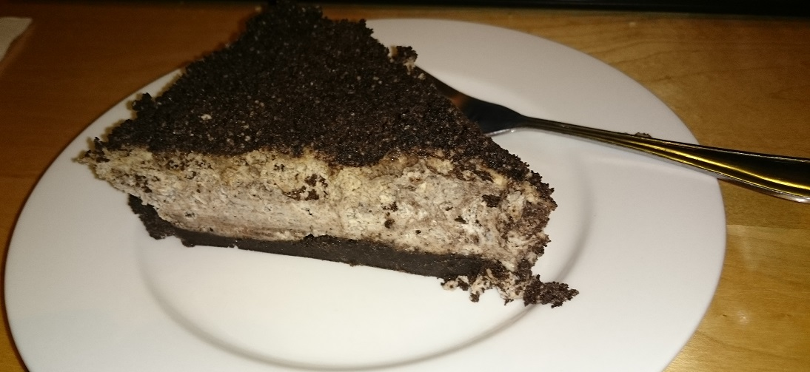

A native son of Cape Town I spent my formative years at Rondebosch Boys' Preparatory School and High School respectively. Since those early years I've wanted to pursue a career in science which I narrowed down to engineering and finally mechatronics. Its multidisciplinary nature and exponentially growing scope fascinated me. Of course, the release of Iron Man in 2007 certainly didn't diminish the appeal.
I am an engineer through and through, excelling in logical and deductive thinking as well as analytical reasoning. I have a passion for problem solving (like any engineer) but consider my interests and skillset diverse. I have a keen interest in analysing film and media (including games) and consider this passion a core part of who I am. In addition to this, short-form fiction and essay writing is a regular creative outlet for me through which I'm able to express and explore a lot of ideas. As the oldest in the family my mother wasted no time in domesticating me and out of this came a passion for baking. Peanut butter, Oreos and cinnamon are my primary weapons here along with a general disregard for what the recipe says.

I worked for a number of years as a core member at one of SA's biggest gaming websites, EGMR, and through this I gained invaluable experience. I learnt how to manage people, employ critical thinking, express myself and, perhaps most importantly, be a functional part of something bigger than myself.
I started in high school as an author out of a love for writing and gaming. I rapidly started taking on more responsibility as time went on and my position within the team solidified. It quickly grew into a real job with my role evolving to encompass editorial functions, staff management and media distributor liason. This in addition to writing several news articles daily. As a senior member of staff I was also involved in undertaking a rebranding and restructuring of the site in 2013. I was with EGMR up until its closure in early 2016 and in that time developed a valuable skllset which can be applied in any workplace environment.
In 2017 I uprooted my entire life to move to Johannesburg for the opportunity to work for Ryonic Robotics, Africa's first bespoke robotics company. Everything is designed and built in-house with as much as possible being sourced or produced locally. This was the opportunity I'd waited a lifetime for and one I could not pass up. With the company still very much in its infancy it was not long before I found myself thrust into the deep end and having to rapidly learn many practical skills which a university education does not provide. Through the intense pressure of my time at Ryonic I have gained invaluable skills and practical knowledge which have made me a more competent engineer.
I consider myself goal-driven and experimental. The former is no more clearly evidenced than by my singular focus for the past decade to become a mechatronics engineer. The latter is meanwhile exhibited in my loose approach to following recipes when baking, instead trying out new and different twists. I live by the philosophy that I will never not make mistakes but should never stop seeking to better myself.